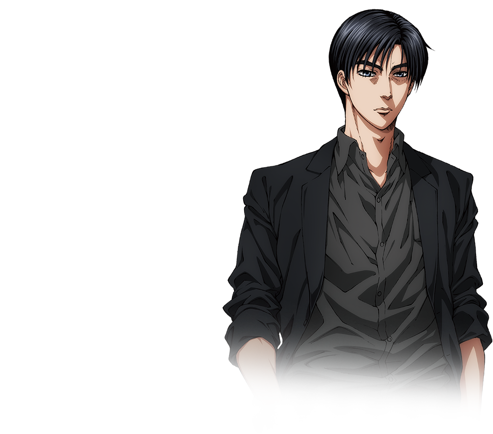
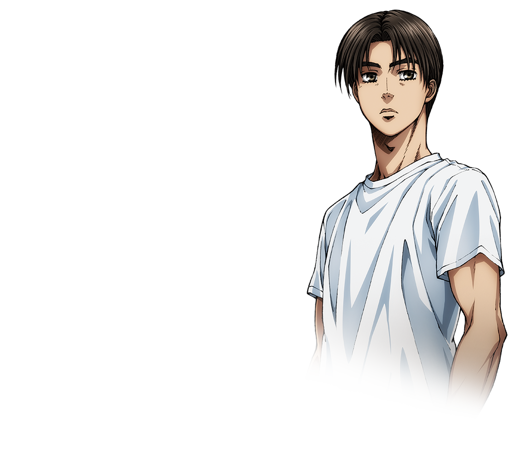
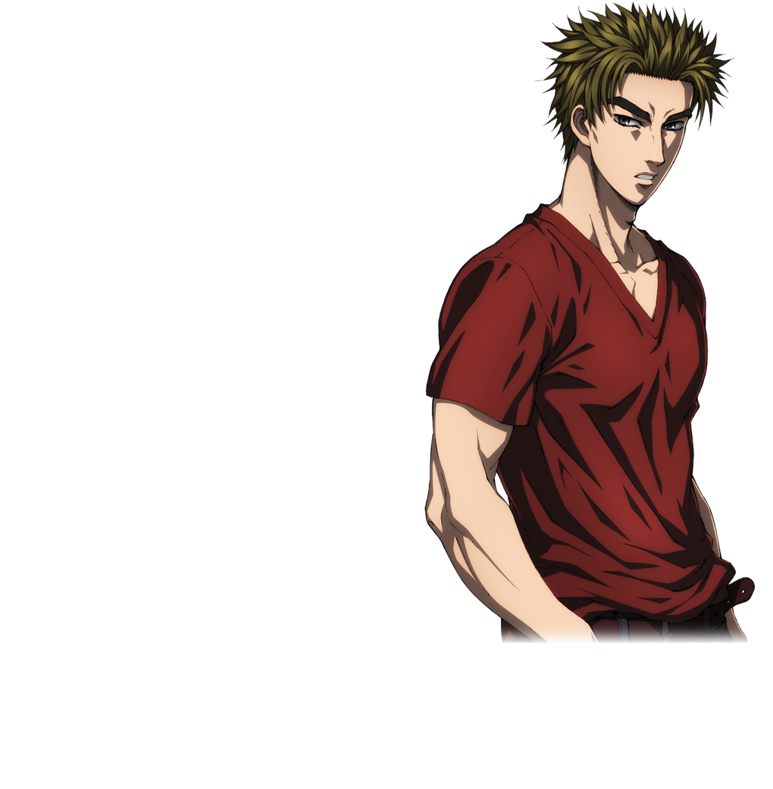

ABOUT US - PROJECT.D
PROJECT D is a legendary street racing team founded to conquer the mountain passes and prove the superiority of its drivers. From its humble beginnings, it has risen to dominate the street racing scene, thanks to a powerful combination of exceptional driving talent, unmatched strategy, and a deep respect for the racing culture.
Ryosuke Takahashi
Leading the team with precision and intelligence is Ryosuke Takahashi, the older brother of Keisuke and the mastermind behind Project D’s strategy. Known as the "Red Suns" of racing, Ryosuke has a brilliant tactical mind that allows him to outthink opponents before a race even begins. He is a master of psychological warfare and is often seen as a calculating strategist who knows when to attack and when to hold back. Ryosuke’s influence on the team is immense, as he ensures that each race is approached with meticulous planning, giving Project D a distinct advantage. His analytical approach and leadership skills are a perfect counterbalance to Takumi’s instinctual, almost supernatural driving.
Takumi Fujiwara
The heart of PROJECT D is Takumi Fujiwara, the team's cornerstone and the ace driver behind its success. Known for his unparalleled reflexes, cool demeanor, and ability to navigate even the most dangerous mountain passes with ease, Takumi is a prodigy who was raised behind the wheel of his father's AE86. Despite his quiet nature and modest background, Takumi's driving abilities have earned him a reputation as one of the most skilled racers in the world. His unique style of driving—often referred to as "drifting"—has made him a feared and respected competitor in every race he enters.
Keisuke Takahashi
The fiery and passionate Keisuke Takahashi, Ryosuke's younger brother, is the team's high-energy, aggressive driver who complements Takumi's cool and composed style. Keisuke’s fiery spirit and hunger for victory make him a force to be reckoned with. His aggressive racing techniques, paired with his deep respect for Takumi's abilities, have earned him the nickname “Flame of the Red Suns.” Keisuke's ambition is clear: to surpass Takumi and prove that he can be the best, while also supporting Project D’s victories in any way he can. His fierce determination and bold tactics have been essential in helping the team maintain its dominance over the competition.
Together, the trio—Takumi, Ryosuke, and Keisuke—form the core of PROJECT D. With Takumi's natural talent, Ryosuke’s strategy, and Keisuke's relentless drive, the team continues to blaze through mountain roads, challenging the best racers from across the regions. Their bond is forged in the fires of competition, respect, and a shared love for racing, making PROJECT D more than just a team—it’s a legacy of street racing excellence.
Project D: where precision meets passion, and every race is a test of skill, heart, and willpower.
MAIN MENU